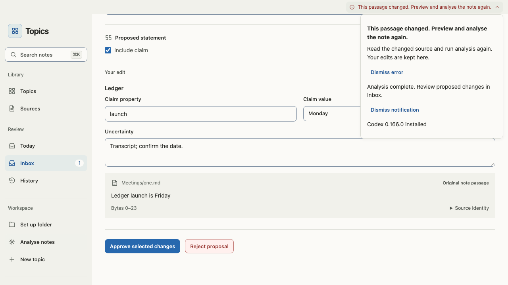
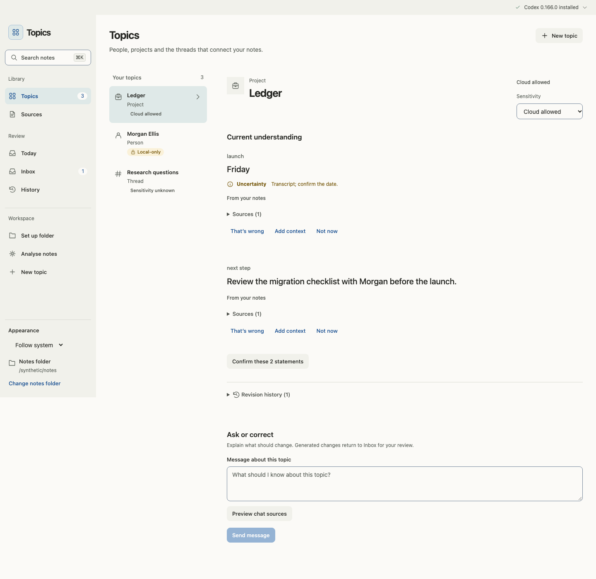
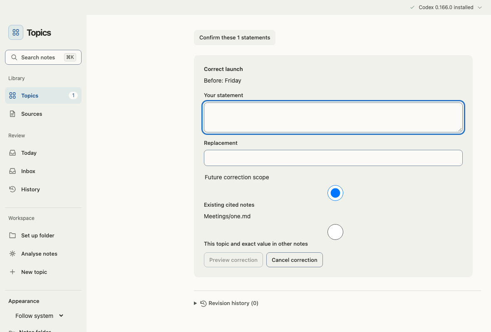

Reading and appearance
Choose an appearance
Open Appearance in the sidebar. Follow system switches whenever the device changes appearance. Choose Light or Dark to keep that palette across launches. You can set this before connecting a notes folder.
Window status
The title bar matches the sidebar in each appearance. Its right edge shows workspace messages, analysis progress and runtime availability. Select the status to read or copy the full message, dismiss a notification or check an unavailable runtime again. If a retry still reports an unavailable runtime, you can retry again from the open panel. Escape closes the details. Drag the empty space between the window controls and the status to move the window.

A changed source needs attention. The edited claim stays in place while you read the message.
Review a topic
Open Topics and select a topic. Under Current understanding, each statement shows its value, uncertainty, review status and sources. Expand Sources to read the passage. Choose That’s wrong to preview a correction, or Add context to record your own words. Review the exact changes before approval. Revision history keeps earlier versions available.

Topic Detail with synthetic meeting notes.

Enter your statement and replacement to enable Preview correction. You can cancel before saving.
How themes work
A local preference selects a named palette. The window applies that palette and its light or dark base to the document root. The reader, graph, BoardUI menus and native fields inherit the same colour roles. Adding a palette requires a registry entry and CSS tokens.